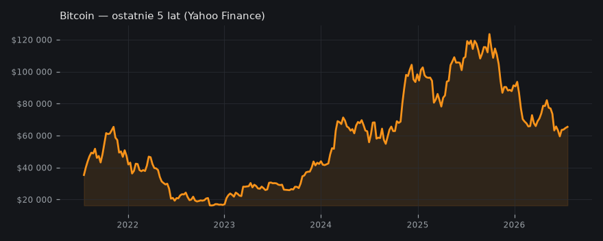
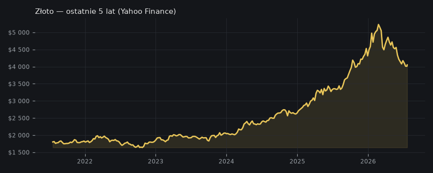

Bitcoin jako przyszłość rynku repo i cyfrowy skarb
Dwa kanały analizują długoterminowy potencjał Bitcoina jako fundamentu globalnego systemu finansowego, porównując go do złota i widząc jego rolę w rewitalizacji rynku repo.
🟢 Dwa kąty na przyszłość Bitcoina: • Bankless patrzy na BTC przez pryzmat rynku repo. Jeśli uda się przenieść struktury repo na Bitcoin, to pojawi się nowa generacja "czystych" zabezpieczeń — kapitał łatwo przenoszony, odporność na cenzurę i wydajne lewarowanie. ZK-rollupy na BTC to klucz, bo dopiero wtedy da się zbudować złożone produkty pożyczkowe z prawdziwego zdarzenia. • Unchained (Lyn Alden) porównuje BTC do złota, ale z naciskiem, że cyfrowa natura Bitcoina to zupełnie nowe pole gry. Złoto potrzebowało setek lat, by stać się skarbem dla różnych cywilizacji — Bitcoin jako cyfrowy skarb nie dostanie akceptacji od ręki, przetestuje go kilka kryzysów. --- Najmocniejszy mechanizm: Struktura repo pozwala, żeby BTC był najbardziej pożądanym zabezpieczeniem w cyklach gospodarczych — nie tylko digital gold, ale kluczowy asset pod lewarowanie wg Bankless. To zmienia całą dynamikę płynności w świecie finansów. --- Dlatego śledź rozwój ZK-rollupów na Bitcoinie i ewolucję narracji "cyfrowego złota". To tu rodzi się nowa infrastruktura, która może popchnąć BTC nie tylko na $60k, ale w perspektywie na $600k wg Bankless. BTC już nie jest tylko szczytem narracyjnego rynku — to maszyna do budowania globalnych systemów finansowych. nie jest to porada inwestycyjna
Unchained — Lyn Alden on Orange Juice and the Bitcoin Treasury Test

🧠 Ściąga — żebyś wiedział o czym piszesz
Aktualizacja — co się zmieniło od wczoraj
Od wczoraj narracja przesunęła się z krótkoterminowego wpływu spadającej inflacji na Bitcoina na szerszą, długoterminową wizję jego roli w światowym systemie finansowym. Kanały skupiają się teraz na porównaniu Bitcoina do złota i na jego potencjale jako zabezpieczenia w rynku repo, w tym rozwoju technologii wspierających DeFi. Konsensus na temat długoterminowej wartości Bitcoina pozostaje, ale pojawiły się nowe akcenty dotyczące infrastruktury i historycznego kontekstu. Wciąż podkreślana jest potrzeba śledzenia ewolucji Bitcoina i zmian makroskładników, ale w szerszym ujęciu.
Kto co mówi
- Bankless: Bankless stwierdza, że Bitcoin ma potencjał zrewolucjonizować rynek repo, stając się najlepszym zabezpieczeniem, a rozwój ZK-rollups na Bitcoinie jest kluczowy do zwiększenia jego funkcjonalności w DeFi i tworzenia złożonych produktów finansowych.
- Unchained: Unchained z Lyn Alden podkreśla, że Bitcoin przechodzi obecnie test jako cyfrowy skarb, porównywalny z historyczną ewolucją złota, zaznaczając, że złoto potrzebowało tysiącleci, by stać się uznawanym skarbem, a cyfrowa natura Bitcoina tworzy nowe wyzwania i możliwości w przechowywaniu wartości.
Oba kanały zgadzają się, że Bitcoin ma ogromny, długoterminowy potencjał jako fundament systemu finansowego i bezpieczny magazyn wartości. Bankless koncentruje się na konkretnym zastosowaniu (rynek repo i DeFi), podczas gdy Unchained analizuje jego rolę bardziej abstrakcyjnie jako cyfrowy skarb w kontekście historycznym i makroekonomicznym.
Twarde dane
- Złoto (futures): $4 051 (+1.6% / 5 dni) · Yahoo Finance
- Bitcoin: $65 481 (+1.3% / 24h) · CoinGecko
Poziomy wg kanałów
- BTC: 60,000 — cena w dolarach
- BTC: 600,000 — potencjalna przyszła cena w dolarach
Wykresy
- BTC/USD — wykres
- Mapa likwidacji BTC
- Bitcoin — ostatnie 5 lat
- Złoto (XAU/USD)
- Złoto — ostatnie 5 lat

Co z tego wynika
Inwestorzy powinni śledzić rozwój infrastruktury Bitcoina (np. ZK-rollups) oraz jego narracji jako cyfrowego złota, ponieważ te trendy mogą znacząco wpłynąć na jego długoterminową kapitalizację i stabilność.